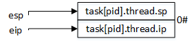

原创作品转载请注明出处 + https://github.com/mengning/linuxkernel/
安装虚拟机，使用 Ubuntu 14.04
使用如下命令，在某一文件夹下创建名为 mykernel 的工作目录
sudo mkdir mykernel进入该 mykernel 目录，使用如下命令下载必要文件
sudo apt-get install qemu # install QEMU
sudo ln -s /usr/bin/qemu-system-i386 /usr/bin/qemu
// download Linux Kernel 3.9.4 source code
wget https://www.kernel.org/pub/linux/kernel/v3.x/linux-3.9.4.tar.xz
// download mykernel_for_linux3.9.4sc.patch
wget https://raw.github.com/mengning/mykernel/master/mykernel_for_linux3.9.4sc.patch
// 解压 Linux-3.9.4 源码
xz -d linux-3.9.4.tar.xz
tar -xvf linux-3.9.4.tar安装补丁
// 进入 linux-3.9.4 文件夹
cd linux-3.9.4
// 安装补丁文件
patch -p1 < ../mykernel_for_linux3.9.4sc.patch
在 linux-3.9.4 文件夹下运行下列命令，即可看到模拟内核运行的结果
make allnoconfig // 最小化运行，不需要多的模块
make // 编译 Linux 内核
// 用 qemu 运行该模拟内核
qemu-system-i386 -kernel arch/x86/boot/bzImage
// 线程最大数目
#define MAX_TASK_NUM 4
// 线程栈大小
#define KERNEL_STACK_SIZE (unsigned long) 1024*2
/* CPU-specific state of this task */
struct Thread {
unsigned long ip; // 当前所读指令位置
unsigned long sp; // 线程栈指针
};
/**
* 进程描述符
*/
typedef struct PCB{
int pid; // 进程号
/* -1 unrunnable, 0 runnable, >0 stopped */
volatile long state;
unsigned long stack[KERNEL_STACK_SIZE]; // 进程栈
/* CPU-specific state of this task */
struct Thread thread;
unsigned long task_entry;
struct PCB *next;
}tPCB;
void my_schedule(void); // 定义进程切换函数

void __init my_start_kernel(void)
{
int pid = 0;
int i;
/* Initialize process 0*/
task[pid].pid = pid;
/* -1 unrunnable, 0 runnable, >0 stopped */
task[pid].state = 0;
task[pid].task_entry = task[pid].thread.ip = (unsigned long)my_process;
task[pid].thread.sp = (unsigned long)&task[pid].stack[KERNEL_STACK_SIZE-1];
task[pid].next = &task[pid];
/*fork more process */
for(i=1;i<MAX_TASK_NUM;i++)
{
memcpy(&task[i],&task[0],sizeof(tPCB));
task[i].pid = i;
task[i].thread.sp = (unsigned long)(&task[i].stack[KERNEL_STACK_SIZE-1]);
task[i].next = task[i-1].next;
task[i-1].next = &task[i];
}
/* start process 0 by task[0] */
pid = 0;
my_current_task = &task[pid];
asm volatile(
"movl %1,%%esp\n\t" /* set task[pid].thread.sp to esp */
"pushl %1\n\t" /* push ebp */
"pushl %0\n\t" /* push task[pid].thread.ip */
"ret\n\t" /* pop task[pid].thread.ip to eip */
:
: "c" (task[pid].thread.ip),"d" (task[pid].thread.sp) /* input c or d mean %ecx/%edx*/
);
}
void my_process(void)
{
while(1)
{
i++;
if(i%10000000 == 0)
{
printk(KERN_NOTICE "this is process %d -\n",my_current_task->pid);
if(my_need_sched == 1)
{
my_need_sched = 0;
my_schedule();
}
printk(KERN_NOTICE "this is process %d +\n",my_current_task->pid);
}
}
}
void my_timer_handler(void)
{
#if 1
if(time_count%1000 == 0 && my_need_sched != 1)
{
printk(KERN_NOTICE ">>>my_timer_handler here<<<\n");
my_need_sched = 1;
}
time_count ++ ;
#endif
return;
}
void my_schedule(void)
{
tPCB * next;
tPCB * prev;
if(my_current_task == NULL
|| my_current_task->next == NULL)
{
return;
}
printk(KERN_NOTICE ">>>my_schedule<<<\n");
/* schedule */
next = my_current_task->next;
prev = my_current_task;
/* -1 unrunnable, 0 runnable, >0 stopped */
if(next->state == 0)
{
my_current_task = next;
printk(KERN_NOTICE ">>>switch %d to %d<<<\n",prev->pid,next->pid);
/* switch to next process */
asm volatile(
"pushl %%ebp\n\t" /* save ebp */
"movl %%esp,%0\n\t" /* save esp */
"movl %2,%%esp\n\t" /* restore esp */
"movl $1f,%1\n\t" /* save eip */
"pushl %3\n\t"
"ret\n\t" /* restore eip */
"1:\t" /* next process start here */
"popl %%ebp\n\t"
: "=m" (prev->thread.sp),"=m" (prev->thread.ip)
: "m" (next->thread.sp),"m" (next->thread.ip)
);
}
return;
}
用上述三个文件取代 linux-3.9.4/mykernel 文件夹下的文件，重新执行下述命令，即可得到 4 个进程轮转执行的程序；
make allnoconfig
make
qemu-system-i386 -kernel arch/x86/boot/bzImage